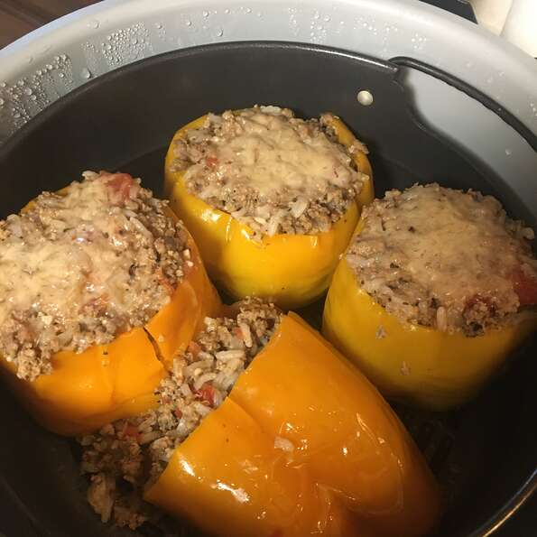

Instant Pot Beef-Stuffed Peppers

Description
These delicious Stuffed Peppers make a great family meal in under an hour!
Ingredients
- 1 tablesppon olive oil
- 1 pound lean ground beef
- 1 medium onion, diced
- 1.5 cups water
- 1 (6 ounc) can tomato paste
- 1 (1.25 ounce} package taco seasoning mix
- 4 green bell peppers, tops and seeds removed
Steps
- Add olive oil to the inner liner of a multi-functional electric pressure cooker (such as Instant Pot®) and select Saute function. Add beef and onion to the hot oil and cook until beef is browned and no longer pink, about 5 minutes. Remove from pot and drain.
- Return beef and onion to the pot, still on Saute mode. Stir in water, tomato paste, and taco seasoning. Bring mixture to a simmer and cook until thickened, 8 to 10 minutes. Fill bell peppers with the mixture.
- Pour 1 cup of water into the inner liner; set trivet inside and place stuffed bell peppers on top. Close and lock the lid. Select high pressure according to manufacturer's instructions; set timer for 8 minutes. Allow 10 to 15 minutes for pressure to build.
- Release pressure carefully using the quick-release method according to manufacturer's instructions, about 5 minutes. Unlock and remove the lid.